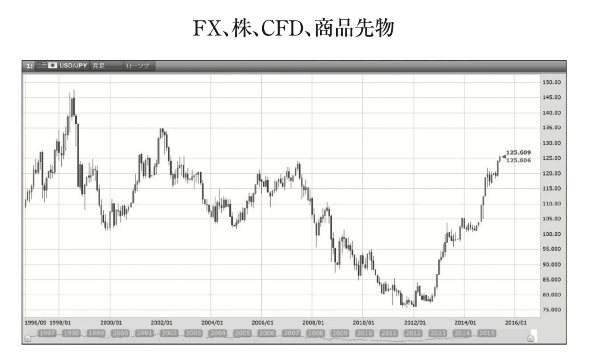
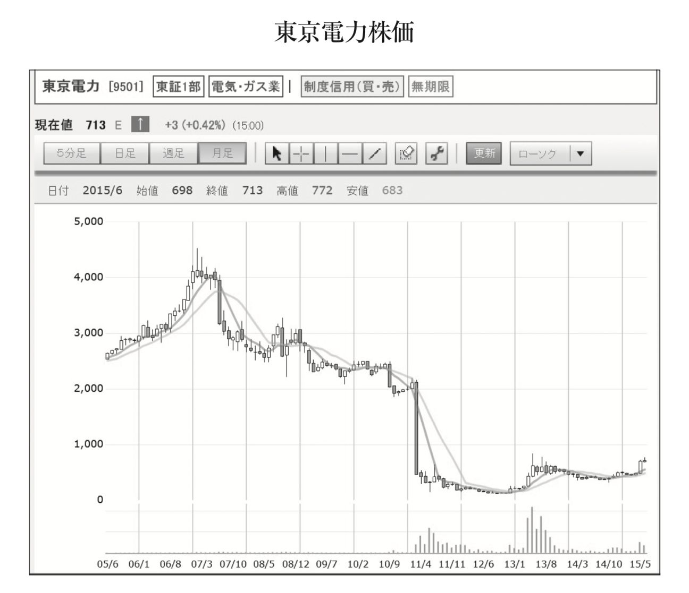
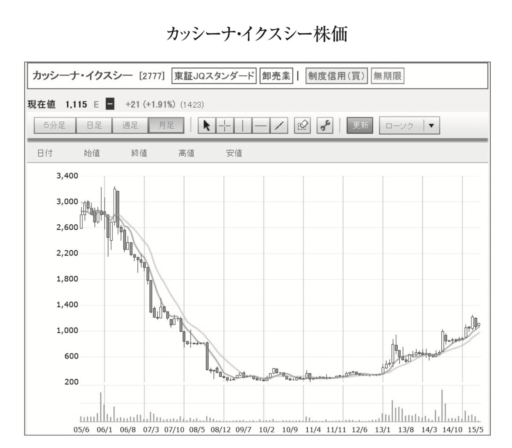
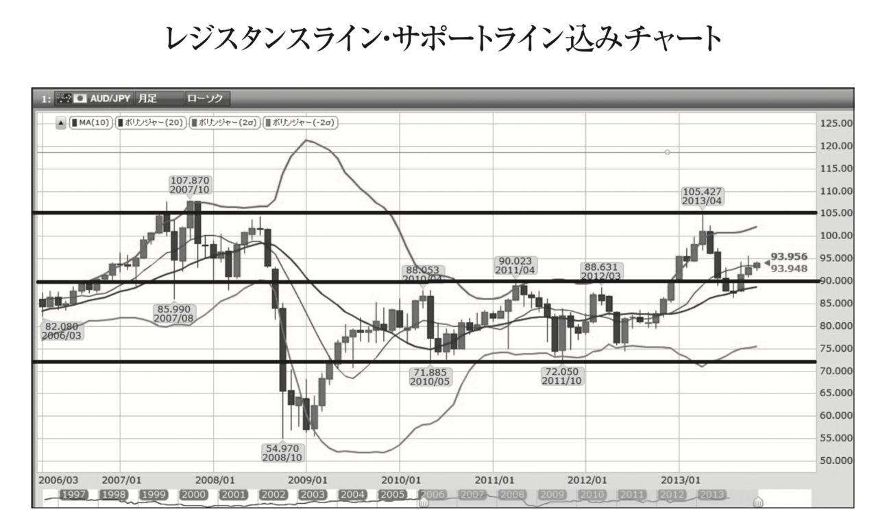
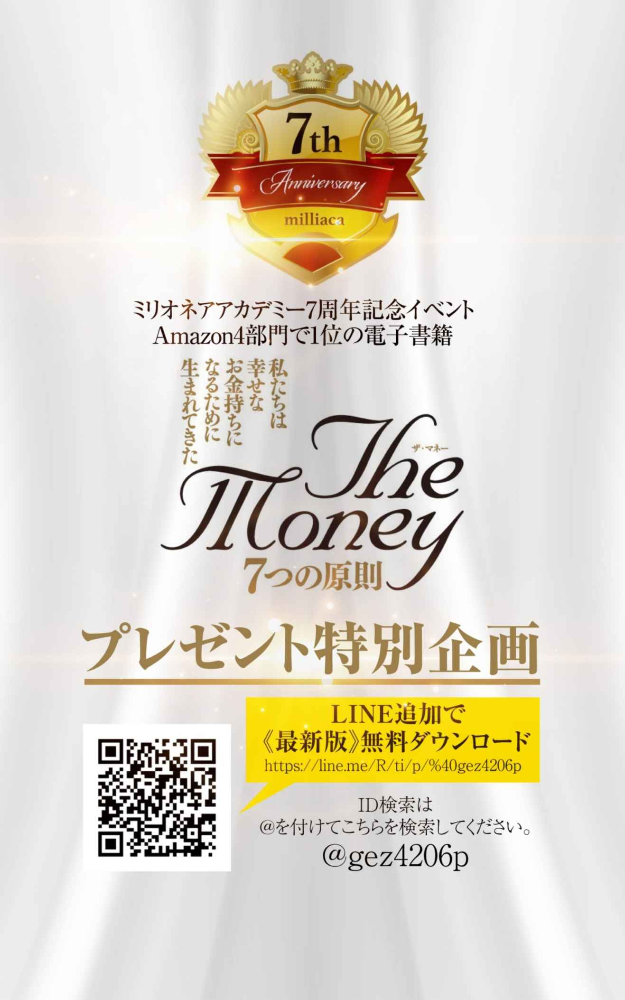
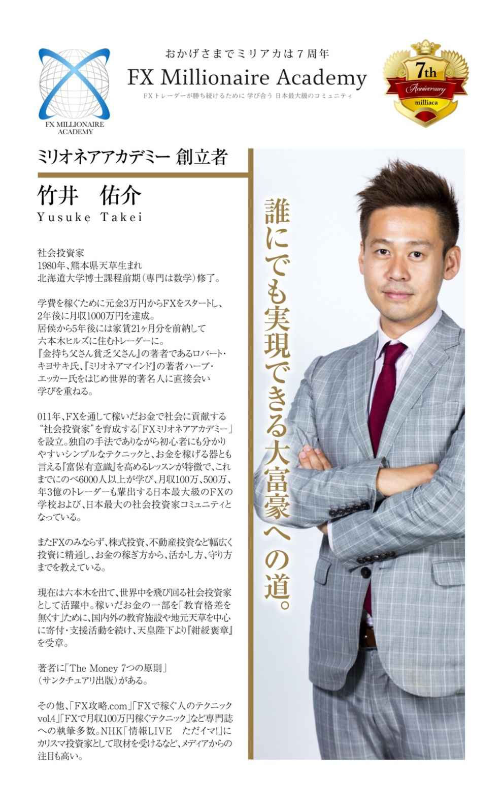

| ザ・マネー 7つの原則 第4章 お金の稼ぎ方 トレード編 | |
| 竹井 佑介 | |
| NEXT LEVEL (2018) | |
第４原則 お金の稼ぎ方 トレード編
４― ３歴史を学ぶ 歴史は繰り返すから、人は歴史から学んでいない
４― ４トレンド 皆がギャーと騒いでいる時にチャンスが転がっている

何か新しいことを始めようとした際に多くの人たちが最初に経験されるのが、「そんなのうまくいくわけがない」という余計なアドバイスです。あなたに、多くの人が失敗する起業やトレードに挑戦するのは無謀だと止めに入ります。そして失敗して欲しくないと必死に止めに入ります。しかしこれがなぜ余計なのでしょうか？
それはその友が本当にあなたのやろうとしていることを理解しておらず、寧ろ無知であることがほとんどだからです。起業やトレードをしたことも無い人からアドバイスを受けても正直それは余計と言わざるを得ません。
誰からアドバイスを聴くのかはとても大切なことです。例えば生まれながらに親や周りの人々から泳ぐことがどれほど危険なものなのかを叩き込まれてきた人は最早自分が泳ごうとしないばかりか、周りの泳ごうとしている仲間たちも必死で止めに入るのではないでしょうか？
でもあなたは灼熱の太陽の中、永遠とも思えるほどに弓状に広がった白浜のビーチと、その先に広がる限りなく透明に近いエメラルドグリーンの海に入ることを止めることは出来ますでしょうか？ それは海で泳ぐリスクをどれほど言われても、それを超える爽快感というリターンがあるのであれば行きたくなるものです。しかもその海で泳ぐリスクを語っている仲間が海に入ったことが無い人であるのであれば説得力もなく尚更海に飛び込みたくなります。
起業やトレートドについても同じことが言えるかと思います。大事なのは「自分がやろうとしていることで既に成功している人からのアドバイスを受ける」ことです。やったこともない人たちからの余計なアドバイスを真に受けているといつまでたっても進みません。
そしてリスクには「失敗するリスク」とは別にもっと大事な「チャンスをものに出来ないリスク」もあります。つまり成功できたものに気付いていたものの、最終的に手を出さないというリスクです。この後者のリスクについてあまりにも軽視されすぎているのが、この日本ではないでしょうか？
トレードの世界においてはこの無知は致命的なダメージにつながります。つまり株で言えば、どこまで下がってしまったら損切りするのかということです。損切り場所すらわからずにこの企業の株は大丈夫とずっと持ち続けていたら、いずれ資金を吹っ飛ばしてしまいます。なぜなら勝率１００％がトレードの世界に無い以上、いつか損切を出すことになります。そのため損切をおかないとうことは限りなく勝率は高くはなるものの、一度失敗してしまうと全資金を吹っ飛ばしてしまうことにつながります （注） 。
その為トレードする前にどこで損切りし、どこで利益確定するのかをしっかりと理解しておく必要があります。つまり市場やその投資商品について深い理解を持ち、自分自身の感情のコントロールまでしっかりとリスクコントロールしておくことが大切なことです。
注 通常、証券会社などで証拠金維持率というものが定められており、トレード資金がある一定割合を割り込んだら強制的に会社側から損切りされるようになっているためいきなりゼロ円になることはほとんどありません。しかしながらリーマンショックや天災など含め値が一気に飛んでしまうことで資金を吹っ飛ばしてしまうこともあるため、相場が荒れている時には休むも相場と言って手を出さないようにすることも大切なリスク管理のひとつです。
無知に関連して次の言葉を紹介したいと思います。通常相場の世界においては、「ひとつの籠に卵は盛るな」という有名な投資格言があります。これは分散投資を勧めるあまりにも有名な格言です。卵をひとつの籠に盛ってしまうと、それを落とすと全部の卵が割れてしまう。しかし複数の籠に分けて卵を盛っておけば、そのうちの一つの籠を落として卵が割れてしまったとしても他の籠の卵は影響を受けずに残すことが出来るということです。
つまりは特定の投資対象だけに投資をするのではなく、複数の投資対象に投資し、リスクを分散させた方が良いという教えを表しています。
しかしながら私の経験上そうは思えません。それには次の２つの理由があります。
①損切を置けば大ダメージは避けられる
そもそも籠を落としてしまう前の段階から損切をしっかりとおいておけば、大きなダメージを避けることが出来ますし、また次の投資に移る十分な資金も確保しておくことが出来ます。その判断基準はおおよそ投資資金の２％以下に損切を置くようにしておけばよいかと思います。１００万円の投資資金であれば一度の損切り２万円以下になるようにしておくという意味です。そのようにしておけば仮に損切にかかったとしても１００万円―２万円＝９８万円の投資資金で次の投資を行うことが出来るため、そこまで次のトレードに支障は無いと言えるのではないでしょうか？
②投資対象が絞り切れていない
ここが最も問題だと思いますが、そもそもどの投資対象が最も今投資すべきなのかの判断が出来ていないということを意味しています。しっかりと学ぶことによって今最も投資すべき対象に集中的に投資をすることが出来ます。厳しい言い方をすれば「分散投資とは無知の表れ」ということも出来るかもしれません。証券会社、銀行側からすれば、投資信託などより多くの投資対象に投資をしてもらうことは、その分信託報酬といった手数料を取ることが出来るため良いかもしれません。
例として、２０１５年１月のスイスショックによってたったの１日の１トレードで３千万円以上利益を出しましたが、それは次のような考えから導かれた結果でした。
ヨーロッパ中央銀行ＥＣＢによる量的緩和によるユーロ通貨安政策に対してスイス１か国が対抗しＥＵＲ／ＣＨＦが１・２の下限を守ることができる訳がない （注） というファンダメンタル分析と、私のトレード手法において月足でＣＨＦ／ＪＰＹ（スイスフラン／円）が最も重要な買いサインを示しており、サインが重なっていたことで積極的に投資をし、大きなリターンを上げることが出来ました。
ひとつの籠に卵が盛れるほど、投資対象について勉強をし、適切な場所に損切を置くことでリスクよりも大きなリターンをあげられるよう日々研究をすることです。
注 ＥＵＲ／ＣＨＦが１・２の下限を守ることができる訳がない
スイスは観光立国であることから自国通貨が高くなることをとても嫌っています。実際最も観光客が訪れるＥＵ諸国の通貨ユーロに対してはとても敏感です。事実ＥＵＲ／ＣＨＦの下限を１・２とするためにも無制限に為替介入するとスイス中銀は宣言しておりました。つまり、スイスフランの１・２倍以上の価格にユーロがおかれるようにと定めてありました。しかしながらユーロが本格的な量的緩和をスタートさせたことによりユーロ通貨は下落することになり、ヨーロッパのほぼ全体で取り組んでいる量的緩和によるユーロ安誘導に対して、スイス１か国が対抗することは不可能ではないかと考えました。事実この時ＥＵＲ／ＣＨＦのチャートも強烈な売りサインが出ていました。
しかしながら多くの人たちは１・２を割るはずがないと言って１・２近辺まで来るとＥＵＲ／ＣＨＦを買うという動きをしていました。そして運命の１月１５日に突如スイス中銀はこの無制限為替介入する方針を撤廃しスイスフランが強烈に上昇し、ＥＵＲ／ＣＨＦは暴落しました。
このようにファンダメンタル分析とテクニカル分析をしっかりと双方から行っておくことが、ひとつの籠に卵を盛る集中投資には欠かせないことです。
歴史を繰り返すという言葉はお聞きになったことがあるかもしれません。古代ローマの歴史家で『アレクサンドロス大王伝』の著作で有名なクルティウス・ルフス（Curtius Rufus）の言葉です。１世紀頃の歴史家と言われていますので約２０００年前から伝えられている言葉ということになります。事実先ほど出てきたSouth Sea社から端を発するバブル相場は、オランダのチューリップバブルから、高度経済成長期の日本の不動産バブル、昨今では世界中のＩＴバブル、携帯ゲーム会社バブルなど枚挙に暇がありません。世の中のルールがいくら変わったとしても、それを作っている人間の本質は変わらないため、過去にあったことは、また後の時代にも繰り返し起きていきます。
トレードの世界を見ているとまさに「歴史は繰り返す」ことを実感します。過去のこれまでのチャートを観ていると上昇相場もあれば、下落相場もあり、その中に似たようなチャートの形は繰り返し何度も出てきます。そのためトレードをするために最初にやるべきことは過去のチャート（テクニカル）と出来事（ファンダメンタル）の検証からです。
過去何度も出てきているパターンを検証し見つけることが、トレードの売買ルールを構築することにつながります。そしてチャートのパターンと同様にバブル相場からの崩壊相場を観ると過去本当に何度も同じ失敗が繰り返されてきています。
各国、対策を取るものの結局はバブルが弾けて一気に株価はじめ資産価値が暴落することになり、そしてそこがとても大切な次の買い場になっています。２０１５年６月現在、債権王と呼ばれているビル・グロス氏も指摘し始めていますが中国株がここ２年特にバブルの様相を呈しており、近い将来このバブルが弾けた際には相当強い暴落相場になる可能性があるため目を光らせています。
このバブルの崩壊のように同じ過ちの歴史を繰り返しているという意味では「人は歴史から学ばない」とも言えるのかもしれません。でも逆にこの「歴史は繰り返す」ということをしっかりと認識し理解していれば、次に同じパターンが現れた時はトレードで大きく稼げるチャンスとなります。これが本当のトレードの醍醐味です。
新聞で株が上がりまくっているという記事を見たからといって、焦って買ったというのでは話になりません。ではどういう時にトレード、投資を始めるのが良いのでしょうか。このことについて次にお伝えしていきたいと思います。
ほとんどの方にとってトレードを始めるきっかけになるのは、相場が好景気になった時なのではないでしょうか。最近で言えばアベノミクスや日銀による異次元緩和などが分かりやすい例かと思います。
しかし、過去の相場を観る限り、真にエントリーすべきタイミングはそこではありません。暴落相場後の落ち込んで底値でくすぶっている時です。事実私が株取引を本格的に始めたのは２００８年のリーマンショック後の２０１０年と、２０１１年の東日本大震災の時からです。東日本大震災の時、私は偶然にも著書『出稼げば大富豪』、映画『神様はバリにいる』のモデルにもなったバリの兄貴として有名な丸尾孝俊さんのご自宅に２週間ほど滞在している最中でした。
大震災のことをニュースで知った私はすぐにドル円のトレードをし、株の仕込み準備に入りました。そして、そこで上がった利益の一部は当時のトレード仲間たちとともに寄付させて頂きました。
では当時取引していた株の例を使ってご紹介します。まずは東京電力です。

元々、２千円台で推移していた東京電力でしたが震災の影響で一気に値を落とし１００円割れまで値が崩れ落ちました。その後１００円前後で長く値がもみ合うことになり、その後徐々に値を戻してきています。
この時に拾っていれば既に７倍以上になっていることが分かります。もちろんこういった場合は上場廃止になるリスクもありますが、原子力損害償・廃炉等支援機構が１兆円を出資したことにより、東京電力は実質国有化となり国が全面的にバックアップすることなどから、そのリスクは低いと判断することが出来ました。同様に当時は配当利回りが４％を超えていたカッシーナがあります。

２００６年にピークをつけた高級家具カッシーナはサブプライムショック、リーマンショックによる世界的不景気のあおりを受け、どんどん業績は悪化し株価も下落の一途をたどっていました。そんな中、アベノミクスがスタートし株価が上昇していく中、株式資産を大量に持つ富裕者層の懐事情が真っ先に回復してくると考えられました。そうなるとすれば高級家具は売れるのではないかと考え底値でくすぶって揉み合っていたカッシーナを買っていきました。２００円強の株価だったものが現在では約５倍の値になっています。
この２つのように底値で張り付いているものの中にはとても面白い銘柄が眠っていることが多々あります。そして総じてその時は最悪の評価を受けているものです。皆が手を出したがらない時に、しっかりと見極められればこのように大きなリターンを上げることが出来ます。過去の話ばかりだけでなく今チェックしているものを観ていくと２０１５年６月現在チャートの形がアイフルは非常に面白いと感じています。
底値にぴたっと張り付いている状況で今少し首を持ち上げてきたかなといった状況です。テクニカル的には非常に好きな形ですが、ファンダメンタル的に観てみると、元々貸金業者のこの暴落は過払い金請求問題が大きかったです。
最高裁が過払い金の返還請求を全面的に認めたのが２００６年。そして貸金業法の改正が決まったのが２００７年です。実際チャートを観てみますと２００６年に入ってピークを付けた後は暴落が続きました。となるとこの過払い金問題はいつ頃清算されるのかと考えてみると、過払い金の時効が１０年ですので、おおよそ２０１７年頃までにほぼ全ての過払い金が時効を迎えることになります。
となると元々景気が回復してくれば上ってくるのが貸金業者であることは歴史が証明しています。また現在でも２０１５年ＡＳＥＡＮ最大の経済成長をすると言われているフィリピンでも貸金業は非常に隆盛を誇っています。日本もこのまま順調に賃金がアップし景気が回復してくるのであればアイフルのような貸金業者もまた息を吹き返してくるのではと考えています。
過払い金請求問題の参照ＵＲＬ（http://saimu4.com/kabarai/4288/）
もちろん１００％ということはありえませんが、歴史からヒントを得つつ、現在の相場に取り組んでいくことが、トレード強いては投資全般において成功するためにはとても大切なことになります。
これまでは株のことを中心にお話してきましたが、ここでは特にＦＸを中心に話してみたいと思います。前節で歴史は繰り返すということについて述べてきましたが、まさにＦＸトレードで稼ぐために必要な基本事項をお伝えいたします。
①緩和
まず緩和ですがこれは何度もこの本の中でも既に出てきていますが、日銀のサイトを引用させてもらうと、
「量的・質的金融緩和」
とは、日本銀行が２０１３年（平成２５年）４月４日に導入した政策です。日本銀行は、消費者物価の前年比上昇率２％の「物価安定の目標」を、２年程度の期間を念頭に置いて、できるだけ早期に実現するため、マネタリーベースおよび長期国債・ＥＴＦの保有額を２年間で２倍に拡大し、長期国債買入れの平均残存期間を２倍以上に延長するなど、量・質ともに次元の違う金融緩和を実施しています。
参照ＵＲＬ（https://www.boj.or.jp/announcements/education/oshiete/seisaku/b27.htm/）
とありますが何のこっちゃ分からないという方も正直いらっしゃるかと思います。
イメージとしましては世の中にたくさんの日本円を出回らせることで、円安の方向に持っていき、２％の物価上昇率を達成するということです。たくさんお金が出回るほどそのお金の価値は下がるという理屈です。
この理屈を理解することよりもトレーダーとしてもっと大事なことは、
「緩和＝通貨安、株高」
ということです。実際リーマンショック後にバーナンキＦＲＢ議長による緩和政策によって大きくドル安になり、ニューヨークダウの株価は大きく上昇しました。
同様に日本も黒田日銀総裁主導のもと異次元の緩和と称し進めた結果、日経平均は大幅に上昇し、円安になりました。
そして２０１４年末からはヨーロッパ中央銀行が緩和政策を始め、ユーロの下落が加速し欧州株は上昇しています。
正直、この緩和政策の出口はどうなるかまだハッキリとはわからないものの、歴史をみると、
「緩和＝通貨安、株高」
ということは言えるため積極的にトレードで狙っていきやすいものになります。
特にドルの方は緩和を終了し、円は継続、ユーロはスタートということですのでユーロドルの下落、ドル円の上昇というのは分かりやすい構図かと思います。
②金利 キャリートレード
次に金利ですが、元々ＦＸにトレーダーが殺到したのは２０１２年のアベノミクスの時よりも前の２００５年前後でした。この頃は何が起きていたのかと言いますと、日本が頑なにゼロ金利を維持していた中、アメリカもヨーロッパもオーストラリアもニュージーランドもどこもかしこも先進国は金利を上げているような状況でした。
そのため安い金利の国の通貨を売って、高い金利の国の通貨を買うというトレードが盛んになっていました。具体的には日本円を売って、ドル、ユーロ、ポンド、豪ドル、カナダドル、スイスフラン、ニュージーランドドルが買われるトレードが盛んでした。通貨の値上がり益だけではなくスワップ金利と言うものがドル円などのポジションを保有していると付いてきましたので、皆長期トレードで長く保有しており数年間に渡りポジションを持っているという方がたくさんいらっしゃいました。
そして物凄く大きな含み益があったものの、結局勉強していないと必ずくるのがしっぺ返し。サブプライムショックとリーマンショックが立て続けに起こり数年間貯めてきた利益が１か月もしないうちに吹っ飛んでしまったという方もたくさんいらっしゃいました。
私の周りでも数百万円から１０億円以上の利益を出していたのにも関わらず結局損失で終わった方や、逆にたったの１か月ちょっとで１０万円を１億円以上にした方もいました。それほどに相場は動くときはとことん動くため、過去の歴史からしっかりと値動きやファンダメンタルについて学んでおくことで、未来に起こりうる値動きの想定を立てておきしっかりと防御しつつ大きな利益を狙っていくことが出来るというわけです。
日本はこれまで約２０年もの間、物価が下落するデフレ下にありました。そのため貯蓄をしていればその現金の価値は上がるような状況にありましたが、これからはその動きが逆転し物価が上昇するインフレの方向に向かっていくことを安倍政権ではしきりに国民に宣言しています。これまでのデフレと全く違う動きになる為、インフレに備えておく必要があるのではないかと思います。
変化とはチャンスであり危機でもあります。変化とは経済の世界においては「富の移動と構築」を意味します。変化の時では、これまでと同じやり方を行っていると通常、経済的に貧しくなってしまいます。なぜならば経済の世界におけるルールが変わるため、これまでと同じやり方は通じなくなっているからです。逆に変化に先んじて対策を取っていた方たちにとっては資産を構築できる又とないチャンスともなりえます。
では日本におけるデフレからインフレへの変化に対してどのように対策しモノにしていけば良いのでしょうか。
私が行っているインフレ対策についてシェアしたいと思います。私の想定としてはインフレ率２％に対して資産を守らなければならないという前提に立って資産を構築しています。
インフレと言っても状況は多種多様に考えられます。私が２０１５年の段階で今後想定しているインフレの状況とは、「円安」、「景気回復」、「人口減少」、「増税」の元におけるものです。
これらを鑑みたうえでどのように構築してきたのかと言いますと、「円安」、日本より先んじたアメリカの「景気回復」と「人口増加」を活用するためにアメリカ不動産を購入しました。更に２２年以上経っている木造で状態が極めて良い不動産をドル円が９０円台の時にドル建てで購入し４年の減価償却によって大幅な節税を図っています。これについては詳しくは次の第５原則の５―２のところで説明しますが、これだけでたったの３年弱で日本円ベースで投資額の倍額以上のリターンを得ることに成功しています。
また４つ全てのことを考えて日本の一等地である東京の恵比寿と秋葉原にマンションを購入しました。このエリアの人口は減少しておらず寧ろ増えているエリアであり、増税前の駆け込み需要で更に値段が上昇することが見込まれるからです。実際、過去１９８９年に消費税は３％引き上げられ、１９９７年に５％へと増税されましたが、どちらの時も駆け込み需要が起きましたが特に不動産をはじめとした高額のものが大きく買われていたのが特徴としてありました。そして歴史は繰り返しました。
２０１４年４月に８％増税された際には日本の特に都心の物件には物凄い買いが集まり値段は一気に上昇していきました。更に２０１７年１０月に１０％へと増税が決まっていることと、東京オリンピックが２０２０年に開催されるため、少なくとも２０１７年までは下がりにくく、寧ろ大きく上昇する可能性が高いのではと感じています。
更に良いことに円安によって東京の一等地は海外の投資家が購入してくれるエリアでもありますので非常に価格が上昇しやすいエリアでもあります。更に日本のワンルームであれば土地が無いために一軒家とは異なり （注） 、古い物件でも建物に対する評価が付くため減価償却によって節税も行うことが出来ます。
また景気が良くなることを見越してのインフレ（期待インフレ）であれば、景気の先行指標である株価は最も敏感に反応するため円安に強い自動車関連株などはまさに鉄板と言えるのではないでしょうか。大事なのは今回とらえられなかったとしても長い人生のうちで少なくとも４、５回は同じような状況を経験するでしょうし、日本だけに限らず世界に目を向けることが出来ればその回数は大きく膨れ上がります。その意味でもインターネットが出来たタイミングに生を受けたことに感謝をしこの有効性、つまりグローバルに物事を進められるこの力を最大限活用していくことこそが、資産構築にとって必要不可欠となるのではないでしょうか。
またひとつ追記しておくと不況下におけるインフレ対策には金（ＧＯＬＤ）の購入を考え、好景気下もしくはそれを期待する中でのインフレ対策としては株や不動産などが良いのではないでしょうか。
注 基本的に古い一軒家だと建物の評価は大きく下がり、ほとんどが土地代となってしまいます。しかしながら土地は減価償却されず節税に使えないため注意が必要です。
先ほどもお伝えした通り経済の世界においては変化とは富の移動であり構築であることを意味しています。ではこの変化をどのようにとらえていけば良いのかについてお話したいと思います。
大きく資産を構築する際には大きな変化を捉える必要がありますが、ではそもそも大きな変化とはどういったことを指すのでしょうか？それは「国の政策の変化」を指します。基礎的なものとして次の４つをおさえておくことが重要です。
①金利の変化
②金融緩和
③天災
④人のゆく裏に道あり
花の山
ひとつずつ観ていきましょう。
①金利の変化
実際キャリートレードの時には先進国が金利を低金利で維持しているところから変化し金利を上昇させていったことで、ゼロ金利を維持していた日本円が売られて（キャリーされて）外貨が買われ空前のＦＸブームが起きました。
そしてこの上がっていた各国の金利も２００８年のリーマンショックによって一気に金利が下落し、大きくドル円、クロス円（ユーロ円、ポンド円、豪ドル円などドル円以外の円関連ポジションのこと）は大きく売り込まれました。ただ注意が必要なのはあくまで先進国の通貨であることが大切です。なぜなら新興国の場合は金利を高くしておかないと外資や銀行への資金を集められないという事情があるからです。そのため高金利だからと言ってその通貨が上昇するとは一概には言えません。
分かりやすい例がロシアルーブルです。ロシアルーブルの急落を止めるために２０１４年１２月１６日にその日のうちに１０・５％から１７％まで金利を引き上げたことがあります。これは経済制裁、ウクライナ問題、クリミア問題とありとあらゆる困難が重なりロシアルーブルが売り込まれたことによる防御策でした。
またトルコリラのような変わった例もあります。２０１５年３月１１日バシュチュ中央銀行総裁とエルドアン首相は会談し、中央銀行側は６月選挙を控えインフレが高止まりしているため利上げ維持を主張しました。それにもかかわらず大統領が中銀に大幅な利下げを迫ったことで、トルコリラは対ドルで過去最安値まで売り込まれる事態となりました。
このように新興国の通貨は極めて不安定なため金利が高いからと言って安易に買うと痛い目にあいます。
②金融緩和
こちらもこれまで述べてきたとおりです。アメリカがリーマンショック後にバーナンキＦＲＢ議長主導で行った緩和政策により、アメリカ株高、ドル安となり、日本では黒田日技総裁主導の元行った異次元緩和策で日本株高、円安となり、ドラギＥＣＢ総裁の元行った緩和策でユーロ安、ヨーロッパ株高へと繋がっています。
③天災
これまで、世界中で数えきれないほどの天災が起こってきました。その天災はひとつの重要な事実を伝えています。トレードの世界において「天災はトレンドを作らない」ということです。どんなに大きな天災が来たとしても、一瞬は平均株価など大きく落ち込むものの、その後に起こる復興需要があることと、こういった危機的状況の中では良い銘柄もつられてまとめて売り込まれるため、トレードの世界においてはバーゲンセールのように良い買い場を作ってくれるということを覚えておいてください。
相場格言に、「人のゆく裏に道あり 花の山」というものがあります。皆がもうダメだと思っていたら実はそこが大変重要な買い場であったり、２０１５年で言えば多くの証券会社が高金利ということでトルコリラの取り扱いを始めて皆が一様に買い始めた時にエルドアン首相の発言と利下げによって大きく売り込まれて対ドルで過去最安値を更新したりするものです。
④人のゆく裏に道あり 花の山
私にとってこの典型例がロシア投資でした。私は投資仲間たちと共に２０１４年の１０月にロシア視察に行きました。それはなぜかというとクリミア問題、ウクライナ問題が重なり、また経済制裁も世界中から受けているということで、実際どのような状況にロシアがなっているのかということでロシアの大企業、中央銀行、証券会社などありとあらゆるところへ視察に行きました。
その時に感じたのはロシア経済は思っている以上にしっかりとしているということでした。実際天然ガス、石油をはじめとしたエネルギーをヨーロッパはロシアに依存している状況でした。この当時は原油価格も暴落していましたが、オイル関連企業最大手のロスネフチに至っては採掘コストが１バレル当たりたったの３ドルしかないことを知り少々の下落くらいでは潰れないのではと感じました。更にロシア投資に確信を持つにいたったのはほとんどの上場企業がほぼ借り入れをしていないということです。事実上場した企業で上場廃止になった企業は何と一社もないという状況でした。
またロシアでは軍事費も増強しており「世界の警察を辞める」とオバマ大統領が発言したアメリカとは対照的です。実際、中東から撤兵したところに今入っているのがロシア軍になり、エネルギーを確保しています。もちろんアメリカが中東から軍を引いた原因はアメリカ国内で膨大な量のシェールガス、シェールオイルの資源が見つかったことと無関係ではないでしょう。ニュースでは原油価格の下落によってロシアが大ダメージを受けているかのような報道がなされていましたが、実際はシェールガス発掘コストが見合わなくなり多くの会社が運営不能になったことはあまり報道されませんでした。常に今何が起きているのかをしっかりと見極めながら投資に活かしていくことはとても大事なことです。皆が言っている状況、思っている状況と実際が異なるのであればそこは大きな投資のチャンスになります。
そこで為替の状況も見極めながら２０１５年の１月に思い切ってロシアの株に今では代表とも仲良くさせて頂いてるＳＰＲＩＮＧ社を通して買っていきました。そして結果的に４か月弱で４０％もの上昇を享受することが出来ました。このまま３００％上昇を狙って私は観ています。２０１５年１２月に経済制裁が延長されるかどうかが決まりますが、延長するためには経済制裁している国が全て延長に賛成をしないといけないため、もしかするとここで経済制裁が解かれる可能性もあると観ています。そのため更に買い増しをしたいので８月にはもう一度ロシア、ウクライナに行くことを企画しています。
ちなみにロシアが落ち込んでいる状況でたくさんの投資家が世界から視察に来られたようですが実際に投資したのはノルウェーの中央銀行と私だけだったそうです。
第４原則の最後にトレードの世界についてちょっとだけ触れて終えていきたいと思います。キーワードはこの３つになります。
①トレンド
②抵抗帯
③期間
特に①、②はとても大切です。まず相場において１番大事なポイントについて解説していきます。
トレードにおいてまず判断しなければならないのは、その銘柄や通貨ペアを「買う」のか「売る」のかどちらを選択するのかということです。それが決まらなければエントリー自体が出来ません。ではどのように「売り」、「買い」を見極めるのか。
その答えは「トレンド」を読むことです。
「上昇トレンドであれば買い」
「下落トレンドであれば売り」
これが基本になります。そして、仮に上昇トレンドの場合、次はどのポイントで実際に買うのかが問題になります。それを見極めるポイントとなるのが抵抗帯です。
つまり、「どこでこのチャートは一旦下げ止まることになるのか」ということです。そして実際にエントリーし、ポジションを持った場合、その後、決済（利益確定か損切り）する際に必要になってくるのも抵抗帯になります。上げ止まる（レジスタンス）、下げ止まる（サポート）可能性が高い抵抗帯をあらかじめおさえておくことで、
「利益確定はレジスタンスの下側」
「損切りはサポートラインの下側」
に置くことが出来ます。
ロウソク足を観ると、チャートをご覧になるとおわかりの通り、過去同じような場所で高値、安値となっており、その後も抵抗帯として機能していることが分かります。そのため現在豪ドル円が上昇しているところですが次の高値の１０５・４２７円を超えられるかどうかが大きな鍵となっていることが分かります。

利益確定に関しては「レジスタンスライン近辺でロウソク足がもみあい状態でそこから上抜ける可能性が高いと考えれば、その次のレジスタンスラインに移動させ、最初のレジスタンス
ラインを抜けたところで買い増しをする（ピラミッディング）こと大勝を狙っていく」という方法もあります。
いずれにしましても抵抗帯は売買の仕掛けをするポイントになるということです。まとめると、「トレンドと抵抗帯」さえ分かればエントリーから決済まですべて決定出来るということです。もっと言えば、世に出回っている全てのトレードの本に書いてあるテクニカルツールや手法に関しましては、ほとんどがこの２つ、トレンドを読むか抵抗帯を探るかのどちらかに分類されることになります。私の場合はトレンドと抵抗帯を読むために移動平均線を中心にボリンジャーバンドなどな様々なツールを組み合わせて活用していますが、より詳しいことにご興味おありの方は私が主催しております日本最大規模の投資コミュニティ、ミリオネアカデミーにお問い合わせ下さい。
最後の③、期間ですが相場は上昇トレンドと下落トレンドを繰り返しながらチャートを形成していきます。そこで気になるのは今の上昇、下落はいつまで続くのか、そして次の上昇下落の波はいつ来るのかということです。有名なのはフィボナッチ数というものを使った分析手法になりますが、この期間分析手法に関してはどれも誤差が大きくバシッとはまることはあまり無いため、上記の移動平均線やボリンジャーバンドの売買サインとフィボナッチ分析が重なったところ以外ではあまり有効活用出来ないというのが現状です。
そのため大事なのは全ての相場分析手法はトレンド、抵抗帯、期間を観るためにあるということだけをまずはおさえておいて頂ければと思います。
私自身トレードを始めたのが２３歳の頃で現在３４歳のため約１２年間やってきたことになります。その間に実に様々なトレーダーさんたちを見てきました。一瞬だけ成功してすぐに消えていく人もいれば成功し続けている方もいらっしゃいます。その違いは一体何なのでしょうか？ それは私が観ている限りこの一点につきます。
トレードで稼いだお金を全てトレードにつぎ込むわけではなく、一部か大部分を資産構築につぎ込みキャッシュフローを作っているということです。しかもそれが節税しながらであれば尚良いです。同じ六本木ヒルズの先輩にもＩＴバブルの際に３千万円の元手を株式投資で１１億まで拡大させることに成功され、その１１億を元手に株式投資をやったもののＩＴバブルが弾けてから思うような成果が出なかったため、一部だけ残して他は不動産に変えられました。そのキャッシュフローでヒルズに自宅を置きながら毎年世界２周されているとてもユニークな方です。また有名なところで言えば、ジョン・テイラー氏が１９８１年に創業したヘッジファンドＦＸコンセプツはピーク時には１４０億ドル超の資産を運用し世界最大のファンドの１つであったものの投資管理事業から結果的には大きな損失を出し撤退してしまいました。
こういった例は本当に星の数ほどと言っても良いくらいたくさんあります。そのため私はトレードを始めた時から徹底しているのは稼いだら、一部を元手に銀行の借り入れのレバレッジも活用しつつ節税しながら不動産を中心に資産構築をしてきています。投資で大事なことはトレードとは違い攻めではなくヘッジ、つまり資産を守ることが最も大事だからです。そして余剰資金を活用して様々な教育機関に寄付させて頂いています。生き残っている方々をみてきた感想は、まずキャッシュフローを生む資産を構築し、世の中のためになることに寄付をしている方が実に多いということです。自分の人生経験だけでしか学部ことかが出来ないのであれば、今世で成功するには時間が足りなくなります。先人や先輩たちの行動からどのようにしたら生き残れるのかをしっかりと学び実践していくことで、今の自分を形作れましたのでとても感謝しています。次はこの本などを通して後輩や後世の方々に学んだことを伝えていければと思っています。

